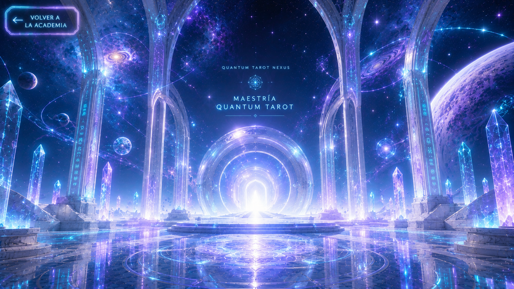

01
El paradigma cuántico
Posibilidad, incertidumbre, observación, relaciones y pensamiento sistémico.

Volver a la Academia Explorar la maestríaNivel 7 de 7
El umbral hacia una nueva comprensión
«Cuando la conciencia transforma la mirada, el Tarot deja de mostrar solamente cartas y comienza a revelar posibilidades».
Has recorrido cada espacio de la Academia. Aprendiste el lenguaje del Tarot, comprendiste sus símbolos, desarrollaste el arte de la lectura y asumiste la responsabilidad profesional. Ahora llegas al Portal Cuántico: un espacio de integración donde Tarot, conciencia, percepción, intuición y pensamiento científico dialogan para construir una visión más profunda de la experiencia humana.
Posibilidad, incertidumbre, observación, relaciones y pensamiento sistémico.
Cómo la atención, la experiencia y la intención intervienen en la interpretación.
Símbolos, arquetipos, resonancias, conexiones y construcción de significado.
Integración de cartas, niveles, escenarios, tiempos y posibilidades.
Construcción de un sistema personal, consciente, ético y profesional.
José Gabriel Ortega
Biólogo, docente universitario y lector de Tarot con más de quince años de experiencia.
Fundador de Quantum Tarot Nexus, una propuesta que integra pensamiento simbólico, reflexión, intuición, conciencia y acompañamiento responsable.
«Quantum Tarot no busca disfrazar el Tarot de ciencia. Propone utilizar las ideas de posibilidad, relación e incertidumbre como una nueva manera de pensar la lectura y la experiencia humana».
Este es el último nivel de la Academia, pero no el final del camino. Al atravesar este umbral comenzarás a construir una forma propia de comprender, interpretar y acompañar mediante el Tarot.
✧ Cruzar el Portal CuánticoEl enlace se incorporará cuando la maestría esté publicada.